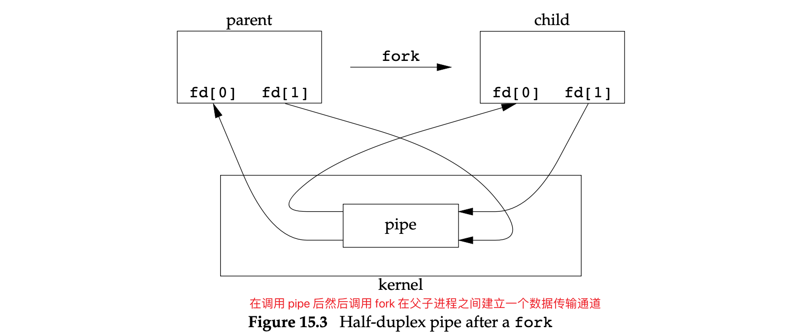
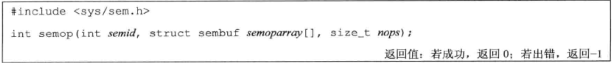

Unix-进程通讯
解释
- UDS：实现方式为 UNIX domain sockets。
- •, UDS：实现方式为 pipes，UNIX domain sockets。
- 前十种用于同一个主机上的进程之间通讯；后两种用于不同主机上的进程通讯。
Pipes
管道的限制
- 考虑到最大可能的移植性，虽然有的管道实现为全双工，但是历史上的管道都是半双工的。因此，在使用时尽可能的认为管道是使用半双工。
- 管道仅能用在具有亲属关系的进程之间。如父子进程之间可通过管道通讯。
函数执行完成后，参数 fd 会存储两个描述符，fd[0] 用于读 fd[1] 用于写。fd[1] 的输出内容可以通过 fd[0] 进行读取。
可以通过 S_ISFIFO 宏来测试一个管道是否是 FIFO，若为成功则通过 fstat 函数获取的 stat 结构中 st_size 一般是未定义的。虽然有些系统在实现上会将读端的 st_size 置为可读数据的长度，但这是不可移植的。
半双工通道在父子进程之间的传输机制：

管道的单向传输
当关闭管道的某一端时，应遵循如下规则：
- 若从管道读取时该管道的写端被关闭，read 函数将返回 0 以表示所有数据已读取完毕。可以复制管道描述符以满足多个进程向管道中写入。
- 当向读端关闭的管道写入时，会触发 SIGPIPE 信号。若忽略该信号或者捕捉该信号然后从信号处理程序中返回，write 函数将返回 -1 并将 errno 置为 EPIPE。
PIPE_BUF 指定了内核中管道的大小。多进程之间不可以同时向管道中写入数据，即管道中仅能允许存在一个进程写入的数据。
示例 1
1 |
|
示例 2
1 |
|
示例 3
1 | // 使用管道实现父子进程的同步 |
示例3管道使用示意图：
popen and pclose Functions
这两个函数的主要作用是：创建一个管道、fork 一个子进程、关闭管道未使用的端、执行一个 shell 并运行命令、等待命令执行结束。
popen：fork 一个子进程、执行 cmdstring 命令并返回一个标准 IO 的 FILE 指针。
pclose：关闭标准 IO 流，等待命令执行完毕，并返回 shell 的终止状态。若 shell 不能被执行，则 pclose 返回的终止状态如同 shell 执行 exit(127) 一样。
| 参数 r 取值 | 描述 |
|---|---|
| r | 文件指针连接到 cmdstring 执行结果的标准输出 |
| w | 文件指针连接到 cmdstring 的标准输入 |
FILE 指针的读写权限由 popen 函数的 type 参数控制。
示例1
1 |
|
示例2
1 |
|
popen 函数不能被 set-user-ID 或 set-group-ID 程序调用。否则 popen 等价于调用 execl("/bin/sh", "sh", "-c", command, NULL);。execl 的执行环境是继承子调用者的，因此 set-ID 文件模式会提高命令执行的权限导致一些安全问题。
在 exec 前后实际用户 ID 和实际组 ID 保持不变，而有效 ID 是否改变则取决于所执行程序文件的设置用户 ID 位和设置组 ID 位是否设置。若新程序的设置用户 ID 位已经设置，则有效用户 ID 变成程序文件所有者的 ID；否则有效用户 ID 不变。对组 ID 的处理方式与此相同。
popen 函数特别适合用于简单地将正在运行的命令的输入或者输出转换成另一种格式。如大小写转换。
1 | // 将此程序编译成 myuclc |
1 |
|
协同进程
当一个程序即产生某个过滤程序的输入，又读取该过滤程序的输出时，该过滤器就变成了协同进程。协同进程通常在 shell 的后台运行，其标准输入和标准输出通过管道连接到另一个程序。
popen 函数只提供连接到另一个进程的标准输入或标准输出的一个单向管道，而协同进程则有连接到另一个进程的两个单向管道：一个连接到其标准输入，另一个连接到其标准输出。我们将数据写到其标准输入，经其处理后，再从其标准输出读取数据。
示例1
1 | // 一个简单的过滤器(协同进程)，用于计算两个数的和。并编译成可执行程序 add2 |
1 | // Figure 15.18 |
示例2
1 | // Figure 15.19 |
1 | // Figure 15.19 改造 |
目前的情况是，我们可以直接修改 add1 的源码，当不能修改其源码时应该如何做？
1 | # 假设 add1 程序替换成 awk 程序，且我们无法修改 awk 程序 |
解决方法是：使协同进程认为它的标准输入和标准输出都是连接到一个终端中即可。这样协同进程中的标准 IO 例程变为行缓冲。具体做法会在伪终端那一章节中介绍。
FIFOs
FIFOs 有时被称为命名管道。无命名管道（pipe）仅能被用在有关联关系（管道由互相通信的两个进程的共同祖先创建）的进程中。而 FIFOs 可以用在无关联关系的进程中。
stat 结构体中的 st_mode 属性可以用来标识文件是否是 FIFO（可通过 S_ISFIFO 宏进行检测）。
参数说明
mode 参数同 open() 的 mode 参数。
函数说明
mkfifoat 函数与 mkfifo 函数基本类似。不同之处在于 mkfifoat 函数可以相对于文件描述符 fd 所在的目录创建一个 FIFO 文件。具体如下：
- 若 path 为绝对路径，则参数 fd 则被忽略，此时 mkfifoat 与 mkfifo 类似。
- 若 path 参数为相对路径且 fd 参数是一个已打开目录的有效文件描述符，则路径名由相对于 fd 指定目录来确定。
- 若 path 参数为相对路径且 fd 参数具有 AT_FDCWD 标志，则路径名相对于当前工作目录来确定，此时 mkfifoat 与 mkfifo 类似。
由 mkfifoat 或者 mkfifo 函数创建的 FIFO 文件，其相关的操作与普通文件一样，如 open、close、read、write、unlink 等。
open FIFO 文件时指定阻塞标志对程序的影响：
- 没有指定 O_NONBLOCK，只读 open 要阻塞到其他进程写入这个 FIFO 为止；只写 open 要阻塞到其他进程读取这个 FIFO 为止。
- 若指定了 O_NONBLOCK，只读 open 立即返回。若没有进程为读而打开一个 FIFO 那么只写 open 将返回 -1，并将 errno 设置为 ENXIO
向没有进程读取的 FIFO 文件中写入，会触发 SIGPIPE 信号。当最后一个 FIFO 文件的写进程关闭该 FIFO 文件时，该 FIFO 文件的的读进程会收到到达文件尾端的信息。
多个写进程交叉写入 FIFO 的问题：
可以使用 PIPE_BUF 指定能够原子写入到 FIFO 文件的最大数据量。
FIFO 的应用
- 用于 shell 命令中，从一个 shell 传递数据到另一个中，且不创建中间态的临时文件。
- 作为一个数据中转站，用于在客户端和服务端传递数据。
示例1：使用 FIFOs 在一系列 shell 命令中复制输出流
使用 FIFOs 实现非线性的进程间连接。（管道只能实现线性连接，如 shell 命令通过管道符 | 实现线性连接）。
实现类似 tee 的功能：

tee会将标准输入拷贝到标准输出以及命令指定的文件中。
1 | mkfifo fifo1 |
示意图：
示例2：使用 FIFOs 实现客户端与服务端之间的通讯
由于同一个 FIFO 文件存在多个写进程，因此每个发送到 FIFO 的请求大小必须在 PIPE_BUF 字节之内，以防止多个写进程的交叉写入问题。
服务器端与多客户端之间的交互实现
客户端发送请求时携带进程 ID，服务端为每个客户端创建不同的 FIFO 文件（如 /tmp/tmp/serv1.xxxxxx）。为了防止客户端挂掉导致 FIFO 一直遗留在系统中，服务端需要捕捉 SIGPIPE 信号，以监听是否存在读进程（客户端）。
【注意】若服务端创建只读的 FIFO，那么每次客户端的数量减少至 0 时，服务端的 read 调用将会收到 FIFO 文件结束的信息。为了阻塞这种情况发生，服务端在调用 open 函数时应指定其读写权限。
XSI IPC
XSI IPC 一般是：消息队列、信号量、共享内存。
Identifiers and Keys
每个内核中的 IPC 结构（消息队列、信号量、共享内存）都用一个非负整数来进行标识（identifier）。identifier 一直是递增的，不管一个 IPC 结构是创建还是销毁，当其达到最大值时又会从 0 开始递增。
identifier 只是 IPC 对象的一种内部表示，通过 IPC 通信的进程之间需要有一个外部的 IPC 对象的命名。因此，在外部，通过 key 来关联一个 IPC 对象。
当通过 msgget、semget、shmget 创建 IPC 结构时也必须指定其 key。key 的数据类型为 key_t（位于 sys/types.h 中，通常定义为一个 long 类型。内核会将 key 转换成 identifier）。
CS 中使用 IPC 的几种方式：
- 服务端通过指定 IPC_PRIVATE key 来创建一个新的 IPC 结构，并将其返回的 identifier 存储在某个文件中，以使得客户端可以获取。
在父子进程中，父进程通过指定 IPC_PRIVATE 创建一个 IPC 结构，返回的 identifier 可以在子进程中使用。此外，子进程也可以将 identifier 通过 exec 函数传递给新程序。 - 在公用头文件中定义一个客户端和服务端都认可的键。然后服务端指定此键创建一个新的 IPC 结构。
这种方式的缺点是：该键可能已经与一个 IPC 结构相结合，这时 get 函数（msgget、semget、shmget）出错返回。服务端必须处理这种错误，删除已经存在的 IPC 结构，然后再尝试创建它。 - 使用 ftok 函数通过一个路径名和项目 ID （0～255的一个字符）来生成一个 key（可用于第2步中）。
参数说明
path：必须引用一个现存的文件。
id：生成 key 时仅使用 id 参数的低 8 位。
函数说明
创建方法：通常是取给定 pathname 的 stat 结构中的 st_dev 和 st_ino 的部分内容，然后与项目 ID 组合在一起。
两个不同文件的路径名在使用同一个项目 ID 的情况下，有可能会创建出相同的 key。因为 i 节点编号和 key 通常存储在一个 long 类型中，因此创建一个 key 时可能会丢失信息。
权限结构
XSI IPC 为每个 IPC 结构关联了一个 ipc_perm 结构，该结构规定了权限和所有者：
1 | // 完整定义见 sys/ipc.h |
在创建 IPC 结构时，对所有字段都赋初值。以后可调用 msgctl、semctl、shmctl 修改 uid、gid、mode 字段（调用进程必须是 IPC 结构的创建者或超级用户）。修改这些字段类似于对文件调用 chown 和 chmod。
mode 字段的取值类如下：
对于消息队列和共享存储使用术语 “读” 和 “写”，而信号量使用术语 “读” 和 “更改”。
结构限制
3 种形式的 XSI IPC 都有内置限制，大多数限制可通过重新配置内核来改变。
FreeBSD 8.0、Linux 3.2.0、Mac OS X 10.6.8 提供了 sysctl 命令来观察和修改内核配置参数。
Solaris 10 中可以使用 prcctl 命令来改变内核 IPC 限制。
在 Linux 中，可通过 ipcs -l 来显式 IPC 相关的限制。
在 FreeBSD 中，等效的命令是 ipcs -T
在 Solaris 中，可通过运行 sysdef -y 来找到可调节参数。
优缺点：
缺点：
- IPC 结构是在系统范围内起作用的，没有引用计数。即当相关进程终止后，它们会一直保留在系统中直到发生下列动作为止（以消息队列为例）：
- 由某个进程调用 msgrcv 或 msgctl 读消息或删除消息队列
- 某个进程执行 ipcrm 命令删除消息队列
- 正在自举的系统删除消息队列。
管道：当最后一个引用管道的进程终止时，管道就被安全地删除；
FIFO：最后一个引用 FIFO 的进程终止时，虽然 FIFO 的名字仍保留在系统中，直至被显式删除，但留在 FIFO 中的数据已被删除了。
- 这些 IPC 结构在文件系统中没有名字。无法使用操作文件的函数来访问或修改它们的属性。由于 IPC 不使用文件描述符，因此不能对他们使用多路转接 IO 函数（select、poll），因此很难一次使用一个以上这样的 IPC 结构，或者在文件或设备 IO 中使用这样的 IPC 结构。因此从多个消息队列中获取消息时只能使用忙等的方式。
- 为了增加相关支持，又增加了十几个系统调用：msgget、semop、shmat；ipcs、ipcrm。
优点：
可靠、流控制的、面向记录的。可以用非先进先出次序处理。
- 无连接：指的是无需先调用某种形式的打开函数就能发送消息的能力。（因为需要有某种技术来获取 identifier ，所以并不认为 IPC 是无连接的）
- 可靠的：指的是所有的 IPC 都被限制在一台主机上，因此是可靠的。当消息通过网络传送时，存在丢失消息的可能性。
- 流控制：指的是若系统资源（缓冲区）短缺，或者若接受进程不能再接受更多消息，则发送进程就要休眠。当流控制条件消失时，发送进程应自动唤醒。
消息队列
本节将消息队列标识符称为队列 ID
消息队列操作函数
| 消息队列操作函数 | 说明 |
|---|---|
| msgget | 创建一个新队列或打开一个现有队列 |
| msgsnd | 将新消息添加到队列尾端 |
| msgrcv | 从队列中读取消息 |
每个消息包含一个正的长整型类型的字段、一个非负的长度以及实际数据字节数（对应于长度）。
可以按照先进先出次序取消息，也可以按照消息类型字段取消息。
队列结构体：
“导出的”表示这种限制来源于其他限制。系统中的最大消息数是根据
最大队列数和队列中所允许的最大数据量来决定的。其中最大队列数还要根据系统上安装的 RAM 的数量来决定。
在创建新队列时，要初始化的 msqid_ds 结构如下：
- ipc_perm 结构
- msg_qnum、msg_lspid、msg_lrpid、msg_stime、msg_rtime 都设置为 0
- msg_ctime 设置为当前时间
- msg_qbytes 设置为系统限制值
msgctl 和另外两个于信号量及共享存储有关的额函数（semctl 和 shmctl）都是 XSI IPC 的类似 ioctl 的函数（亦即垃圾桶函数）。
cmd 参数指定对 msqid 指定的队列要执行的命令：
ptr 参数指向一个结构体，它包含了正的整型消息类型，其后紧接着的是消息数据（若 nbytes 是 0，则无消息数据）。若发送的最长消息是 512 B，则可定义下列结构：
1 | struct mymesg { |
flag 参数可指定为 IPC_NOWAIT。若消息队列已满（或者是队列中的消息综述等于系统限制值，或队列中的字节总数等于系统限制值），则指定 IPC_NOWAIT 使得 msgsnd 立即出错返回 EAGAIN。若没有指定 IPC_NOWAIT，则进程会一直阻塞到：有空间可以容纳要发送的消息；或者从系统中删除了此队列（会返回 EIDRM 错误，〈标识符被删除〉）；或者捕捉到一个信号，并从信号处理程序返回（会返回 EINTR 错误）。
当消息队列被删除后，使用该消息队列的进程若再次对该队列进行操作会导致出错（即删除消息队列时，有可能其他进程还在使用该消息队列）。信号量机制也使用类似的方式处理其删除。
当 msgsnd 返回成功时，消息队列相关的 msqid_ds 结构会随之更新，主要包括调用的进程 ID（msg_lspid）、调用的时间（msg_stime）、队列中新增的消息（msg_qnum）。
ptr 参数指向一个包含消息类型和用于存储实际消息数据的缓冲区的结构体。
nbytes 参数指定数据缓冲区的长度。若返回的消息长度大于 nbytes，且在 flag 中设置了 MSG_NOERROR 位时，则该消息会被截断。若没有设置该标志，而消息又太长，则出错返回 E2BIG（消息仍留队列中）。
| 参数 type | 描述 |
|---|---|
| type == 0 | 返回队列中的第一个消息 |
| type > 0 | 返回队列中消息类型为 type 的第一个消息 |
| type < 0 | 返回毒烈中消息类型值小于等于 type 绝对值的消息，若这种消息有若干个，则取类型值最小的消息。可以实现按优先级读取消息 |
若消息队列由多个客户端和一个服务端使用，那么 type 字段可用来包含客户进程的进程 ID（只要进程 ID 可以存放在长整型中）。
flag 参数可指定为 IPC_NOWAIT，使操作不阻塞。这样，当没有锁指定类型的消息可用时，则 msgrcv 返回 -1，errno 设置为 ENOMSG。若没有指定 IPC_NOWAIT，则进程会一直阻塞到有了指定类型的消息，或者从系统中删除了此队列（返回 -1，errno 置为 EIDRM），或者捕捉到一个信号并从信号处理程序中返回（这会导致 msgrcv 返回 -1，errno 置为 EINTR）。
msgrcv 成功执行时，内核会更新与该消息队列相关联的 msgid_ds 结构，主要包括调用者的进程 ID（msg_lrpid）、调用时间（msg_rtime）、指示队列中的消息数减少 1 个（msg_qnum）。
XSI 信号量
XSI 信号量要求：
- 信号量并非是单个的非负值，而必须定义为含有一个或多个信号量值的集合。当创建信号量时，要指定集合中信号量值的数量。
- 信号量的创建（semget）是独立于它的初始化（semctl）的。缺点是：不能原子地创建一个信号量集合，并对该集合中的各个信号量赋初值。
- 即使没有进程正在使用各种形式的 XSI IPC，它们仍旧会存在。有的程序在终止时并没有释放已经分配的信号量。
每个信号量集合维护着一个 semid_ds 结构：
每个信号量用一个无名结构来表示：
影响信号量的系统限制：
当创建新集合时，要对 semid_ds 结构的下列成员赋初值：
- 初始化 ipc_perm 结构。
- sem_otime 设置为 0
- sem_ctime 设置为当前时间
- sem_nsems 设置为 nsems（nsems 是该集合中的信号量数。若创建新集合（一般在服务器进程中），则必须指定 nsems。若引用现有集合（一个客户进程），则将 nsems 指定为 0）
是否指定 arg 参数取决于所请求的命令。
1 | union semun { |
通常 union semun 由程序自己定义。但在 FreeBSD 8.0 中，senum 已由 sys/sem.h 定义好。
cmd 参数的取值如下。这些命令时运行在 semid 指定的信号量集合上的。

1 | struct sembuf { |
参数 nops 指定了数组的长度。
成员属性 sem_op 的取值

exit 时的信号量调整
当进程终止时，占用的经由信号量分配的资源并不会收回。
无论何时只要为信号量操作指定了 SEM_UNDO 标志，然后分配资源（sem_op 值小于 0），那么内核就会记住对于该特定信号量，分配给调用进程多少资源（sem_op 的绝对值）。当该进程终止时，内核将检验该进程是否还有尚未处理的信号量调整值。若有，则按调整值对相应信号量值进行处理。
若用带 SETVAL 或 SETALL 命令的 semctl 设置一个信号量的值，则在所有进程中，该信号量的值都将设置为 0.
共享存储
可以使用信号量或记录锁或互斥量来实现多进程对共享存储区的存取。
XSI 共享存储段是内存的匿名段。每个共享存储段使用 shmid_ds 结构来表示（至少包含如下属性）：
其中数据类型 shmatt_t 定义为无符号整型，它至少与 unsigned short 一样大。
| 函数名称 | 作用 | ||
|---|---|---|---|
| shmget | 获取一个共享存储描述符 | ||
| shmctl | 对共享存储段进行多种操作 | ||
| shmat | 将共享存储段连接到调用进程的地址空间中 | ||
| shmdt | 与共享存储段分离。但并不从系统中删除其标识符和相关的数据结构。该标识符仍然存在，直到某个进程（一般是服务器进程）带 IPC_RMID 命令的调用 shmctl 特地删除它为止 | ||
当创建新的共享存储段时，应初始化 shmid_ds 结构的下列成员：
- ipc_perm 结构
- shm_lpid、shm_nattach、shm_atime、shm_dtime 都设置为 0
- shm_ctime 设置为当前时间
- shm_segsz 设置为请求的 size
参数 size 是该共享存储段的长度，以字节为单位。实现通常将其向上取为系统页长的整数倍。若应用指定的 size 并非系统页长的整数倍，那么最后一页的余下部分是不可使用的。
若正在创建一个新段（通常在服务器进程中），则必须指定其 size；新段内的内容被初始化为 0.
若正在引用一个现存的段（一个客户进程），则将 size 指定为 0。


1 | // 打印一些特定系统存放各种类型的数据的位置信息 |
运行结果：
从上述结果中可以看到该系统的内存布局：
/dev/zero 的存储映射
在读设备 /dev/zero 时，该设备是 0 字节的无限资源。它接收写向它的任何数据，但又忽略这些数据。
/dev/zero 由两个不相关的进程使用。
/dev/zero 进行存储映射时，具有一些特殊性质：
1 | // Figure 15.33 |
匿名存储映射
POSIX 信号量
POSIX 信号量与 XSI 信号量的区别：
POSIX 信号量有命名的和未命名的两种形式，其差异在于创建和销毁的形式上，其他工作一样。
- 未命名信号量仅能用在同一进程中的线程中，或者不同进程中已经映射相同内存到它们的地址空间中的线程。
- 命名信号量可以通过名字访问，因此可以被任何已知它们名字的进程中的线程访问
| 函数名 | 描述 | |
|---|---|---|
| sem_open | 创建一个新的命名信号量或者使用一个现有信号量 | |
| sem_close | 释放信号量的相关资源 | |
| sem_unlink | 销毁一个命名信号量。 若存在对该信号量的引用，则需要等待最后一个引用关闭次啊可以销毁该命名信号量。 |
|
| sem_trywait | 实现信号量减 1 操作 当信号量值为 0 时，sem_wait 会阻塞直到成功减 1 或被信号打断为止 sem_trywait 不会阻塞，而是返回 -1 ，并置 errno 为 EAGAIN |
|
| sem_wait | ||
| sem_timedwait | 减 1 过程中，若不满足条件则阻塞一段时间 | |
| sem_post | 实现信号量加 1 的操作。 调用 sem_post 时，若在调用 sem_wait（或者 sem_timedwait）中发生进程阻塞，那么进程会被唤醒并且被 sem_post 增 1 的信号量计数回再次被 sem_wait（或者 sem_timedwait）减 1 |
|
| sem_init | 创建一个未命名的信号量。 在单个进程中使用 POSIX 信号量时，使用未命名信号量更容易，因为这仅改变创建和销毁信号量的方式 |
|
| sem_destroy | 释放未命名信号量的资源。 调用 sem_destroy 后，不能再使用任何带有 sem 的信号量函数，除非通过调用 sem_init 重新初始化它 |
|
| sem_getvalue | 检索信号量的值。 该函数获取的值后，信号量的值仍旧可能被其他线程更改。除非使用传统的同步机制避免信号量的竞争，否则该函数仅能用于调试过程中。 Mac OS X 10.6.8 中不支持该函数。 |
|
| 用途 | 参数设定 | |
|---|---|---|
| 使用现有的命名信号量 | 指定信号量名字和 oflag = 0 | |
| 创建新的信号量，若信号量已存在，则 sem_open 失败 | oflag 设定 O_CREAT ｜ O_EXEL 标志；mode 指定信号量访问权限；value 指定信号量的初始值（范围为 0～SEM_VALUE_MAX）； | |
| 创建新的信号量，若存在则使用存在的信号量 | 与上一条相比，仅需要保留 oflag 的标志为 O_CREAT (待验证) | |
mode 取值与打开文件的权限位相同：用户读、用户写、用户执行、组读、组写、组执行、其他读、其他写、其他执行。
赋值给信号量的权限可以被调用者的文件创建屏蔽字修改。
信号量命名规则：
- 名字的第一个字符应该是斜杠
/。 - 名字不应包含斜杠
- 名字长度不长于 _POSIX_NAME_MAX 个字符长度。
进程退出前没有调用 sem_close ，内核会自动关闭已打开的信号量。但这并不会影响信号量的状态，即若信号量增 1，内核也不会改变它。即使调用 sem_close ，信号量的值也不会变。
在 POSIX 信号量中没有类似 XSI 信号量的 SEM_UNDO 机制。
参数 tsptr 指定的是绝对时间。基于 CLOCK_REALTIME 时钟测算。
若等待超时，则返回 -1 ，并置 errno 为 ETIEMDOUT。
参数 pshared 指定了该未命名信号量是否用于多进程环境。
pshared != 0 表示用于多进程环境，否则不用于。
参数 value 指定该未命名信号量的初始值。
参数 sem 用来获取创建的未命名信号量的地址。若该未命名信号量用于两个进程中，那么 sem 参数需要指向两个进程之间共享的内存范围。
调用成功时，参数 valp 用于存储信号量的值。使用 sem_getvalue 获取的信号量值可能会被其他线程更改。
在 Mac OS X 10.6.8 中是不支持该函数的。
示例
1 | // slock 可以用于一个线程加锁，另一个线程解锁。 |
1 | // 基于 POSIX 信号量量来实现互斥 |
客户进程-服务器进程属性（Client–Server Properties）
不同类型的 IPC 对客户进程和服务器进程的影响：
客户端进程使用 fork 以及 exec 创建服务端进程。
CS 之间通信可以使用两个半双工的管道。服务进程可以是拥有某些特殊权限的 set-user-ID 程序。
此外，服务进程能够通过客户进程的实际用户 ID 来确定客户进程的身份。（调用 exec 子进程会继承父进程的实际用户 ID 和实际组 ID）
这种方式需要创建 open server，用于专门为客户进程打开（调用 open）文件。这样除了 用户/组/其他 权限的检查外，还可以添加一些额外的检查（如通过设置 ser-user-ID 位）。open server 通过客户进程的实际用户 ID 来决定其是否对请求文件有访问权限。这种情况下，服务进程作为子进程能够将普通文件的内容传送给客户进程（父进程）但不能用于特殊设备文件的传输。同时服务进程也不可以传递已打开的文件描述符给客户进程，（反之是可以的）。
服务进程以守护进程来运行，并使用某种形式的 IPC 与客户进程通讯
不能使用管道，可以使用 FIFO 或者消息队列来实现。
服务进程可以看到每个客户进程的 FIFO 以便于返回数据给客户进程。
补充材料：原书15.11节